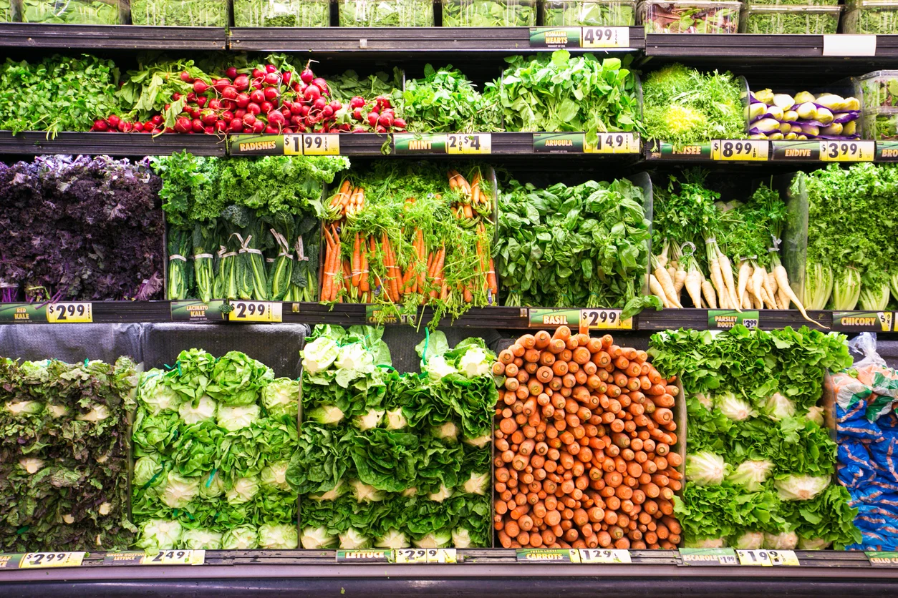

Plant Cultivation

Vegetable Delivery and Transport

Vegetables in the Market
Plant Cultivation
Vegetable Delivery and Transport
Vegetables in the Market
See More
Food security: Guarantees the continuous and sustainable production of food, meeting the growing demand of the world's population without compromising the productive capacity of future generations. Environmental preservation: Minimizes the negative impacts of agriculture on the environment, protecting soil, water, biodiversity, and combating climate change. Food quality: Promotes the production of healthier, more nutritious foods free from pesticide residues, benefiting human health and contributing to a better quality of life. Social development: Generates income and job opportunities in rural areas, contributing to the development of communities and reducing poverty. Agribusiness competitiveness: Increases the competitiveness of agribusiness in the international market, valuing sustainable production and meeting the growing demand for ecological and socially responsible products.
Access to information and technology: Not all farmers have access to the information and technology necessary to implement sustainable agricultural practices, requiring investments in training, research, and rural extension. Financing: Access to credit and financing to invest in sustainable practices can be a challenge for farmers, requiring adequate public policies and incentives. Changing mindset: The transition to sustainable agriculture requires a change in mindset and culture among farmers, consumers, and society in general, recognizing the importance of sustainability and valuing sustainable products. Articulation between different sectors: It is essential to articulate between different sectors of society, such as government, industry, academia, and NGOs, to promote research, the dissemination of technologies, and the implementation of public policies that encourage sustainable agriculture. Complexity and diversity: Agriculture is a complex and diverse activity, with different production systems, crops, climates, and socioeconomic realities. This diversity makes it difficult to standardize sustainable practices and requires solutions adapted to the specificities of each context.
Benefits:
Challenges:

Soil conservation: Adoption of practices that protect soil health, such as crop rotation, mulching, and rational irrigation management, preventing erosion, nutrient loss, and desertification.
Water conservation: Efficient use of water in irrigation, minimizing waste and seeking alternative sources, such as rainwater harvesting and reuse of treated water.
Biodiversity: Conservation of biodiversity in the agroecosystem, promoting harmony between different species of plants, animals, and microorganisms, which contribute to ecological balance and soil health.
Animal welfare: Animal husbandry with respect for their well-being, guaranteeing adequate living conditions, feeding, and management, avoiding suffering and promoting practices that preserve animal health.
Reduction of pesticide use: Seeking natural alternatives to pest and disease control, such as integrated pest and disease management (IPM), which prioritizes biological and ecological methods, reducing environmental impact and food contamination.
Agroecological production: Adoption of agroecological practices that mimic natural processes, promoting nutrient cycling, natural control of pests and diseases, and crop diversification, resulting in healthier foods with a lower environmental impact.
Fair trade and family farming: Supporting family farming and fair trade, guaranteeing fair prices for rural producers, valuing local production and contributing to the development of rural communities.
Awareness and environmental education: Promoting awareness and environmental education among farmers, consumers, and society in general, disseminating information about the importance of sustainable agriculture and encouraging more responsible practices.